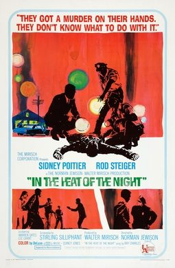

In the Heat of the Night
Studio: The Mirisch Company
Starring: Sidney Poitier, Rod Steiger, Warren Oates
Director: Norman Jewison
Writer: Stirling Silliphant, John Ball
Producer: Walter Mirisch
In the Heat of the Night is a 1967 American Southern Gothic mystery-drama film directed by Norman Jewison, produced by Walter Mirisch, and starring Sidney Poitier and Rod Steiger. It tells the story of Virgil Tibbs (Poitier), a black police detective from Philadelphia, who becomes embroiled in a murder investigation in a small town in Mississippi.
Trivia
- Won the Academy Award for Best Picture.
- Won the Academy Award for Best Actor.
- Won the Academy Award for Best Film Editing.
- Won the Academy Award for Best Writing, Adapted Screenplay.
- Won the Academy Award for Best Sound.
- Also nominated for: Academy Award for Best Director; Academy Award for Best Sound Editing.
- Based on In the Heat of the Night (1965 novel by John Ball).
- According to the AFI Catalog of Feature Films, the two were "old friends who had long sought an opportunity to work together." In the Heat of the Night was the film debut for several of its actors - Scott Wilson, Anthony James, Quentin Dean, and Eldon Quick.
- Clegg Hoyt's unbilled appearance in this film was his final acting role.
- The original novel was set in the (fictional) town of "Wells, South Carolina", but the name of the town was changed to Sparta so that the filmmakers could use the existing signage and storefronts.
Previous Showings
1 Run • 1 Festival
All runs on record (1):
- July 23 - 24, 2022Summer 2022 + Extended Summer Calendarw/ To Sir, With Love